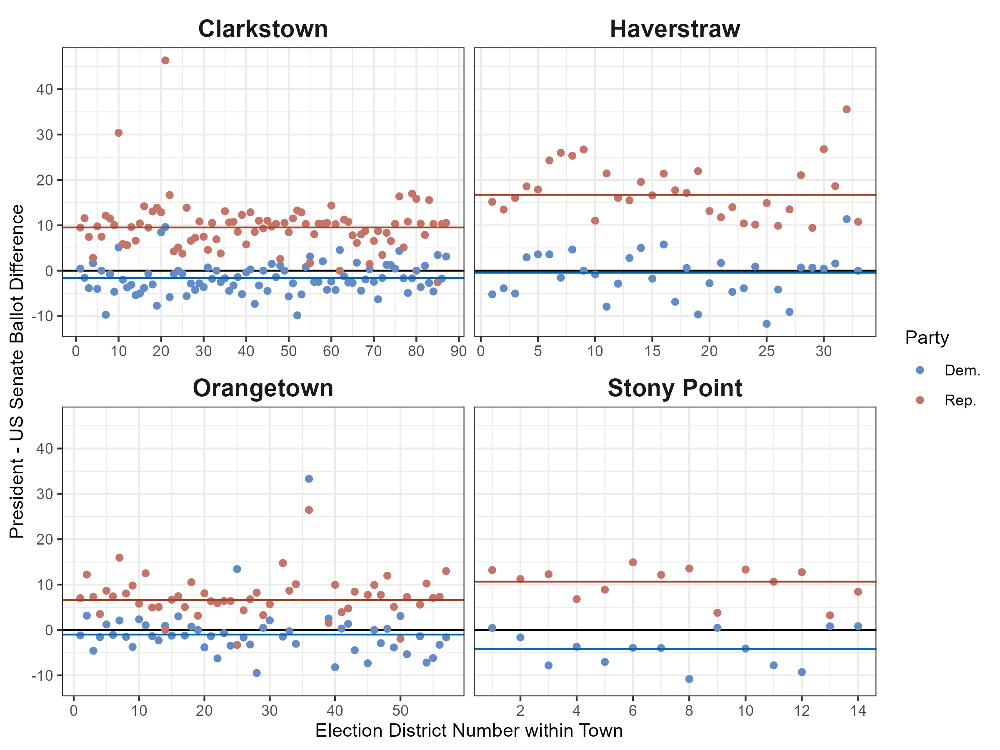

![]()
| Senate |
President
|
||
|---|---|---|---|
| Democratic | Republican | Other | |
| Democratic | 5,891,251 | 282,086 | 62,684 |
| Republican | 276,155 | 5,145,739 | 87,282 |
| Other | 91,359 | 62,043 | 475,611 |
Thinking SMARTer about election fraud in Rockland County, NY
elections
A look at the data and empirical claims in a local election fraud case brought by an unsuccessful third party candidate and SMART Legislation in Rockland County, NY.
An election fraud case was recently allowed to go forward in Rockland County, NY. The case is centered around the idea that ballot machines were not correctly counting the ballots and includes at least one huge ask:
Invalidate the races for President and U.S. Senator in the November 2024 General Election in Rockland County.
It’s an interesting case and all of the filings are on the NYSCEF website. The case is brought by a candidate for a small third party (Diane Sare), two voters, and SMART Legislation, an electoral reform group.
Since I’m in a short quiet period between finishing a PhD in political science at Harvard and starting a postdoc at Princeton, I thought I’d take a look at the data and major claims. I also grew up in Rockland and spend a lot of my time here, so will opine a bit on the quirks of the area. This is a blog post focused on the data and mechanisms for the claims for my own interest, has not been paid for by any party to the lawsuit, and should not be interpreted as expert evidence. As it is a blog post and not my normal academic or expert writing, I include some personal reactions and opinions.
Below, I start by giving a brief overview of the case. Then, I explain some thoughts on three pieces of evidence:
- Ballot rolloff: how many votes are cast in down-ballot races (US Senate or US House) compared to US President
- Precincts with 0 votes for Harris: two precincts in Ramapo have votes for Gillibrand but 0 for Harris
- Precincts with more voter affidavits for Sare than votes for Sare
The short of it is that I’m quite skeptical of the evidence presented in the case thus far. The evidence presented doesn’t really ring any alarm bells, despite the extravagant claims made with it. Pushing very lightly on the obscure statistics chosen makes most of the claims fall apart. Further, the petitioners misrepresent the academic literature that they cite to. Despite lots of discussion online, everyone should be cautious in considering this case as a big win for election deniers.
Sare v. Rockland County Board of Elections Background
Diane Sare ran for the US Senate in NY in November 2024. Less than a month later, she sued the Rockland County Board of Elections. The suit is joined by SMART Legislation, an advocacy group affiliated with SMART Elections. There are also two voters on the case who claim to have voted for Sare and want to ensure that their votes, along with other voters for Sare, had their votes counted correctly.
Now, in June 2025, the case is picking up again after a state Supreme Court judge ruled that it should continue to discovery. As a quick reminder, the Supreme Court in NY is the lowest court in the state, not the court of last resort. A boisterous press release has increased the following for the case. In the release, Lulu Friesdat of SMART Legislation says the following:
There is clear evidence that the Senate results are incorrect, and there are statistical indications that the presidential results are highly unlikely.
In support of these claims, the suit includes sworn affidavits from several voters, primarily neighbors of Sare, who swear that they voted for her. Further, they link to a slide deck by a physicist and astronomer. The summary of the slide deck is:
- Harris underperformed Gillibrand
- Trump outperformed Sapraicone
- Harris’s underperformance is “STATISTICALLY SIGNIFICANT[ly]” different compared to how Biden performed against Mondaire Jones in 2020
The press release further links to a Bluesky thread that posts images from an online election site for Rockland County. These point to a small number of precincts where Kamala Harris received a small number of votes, while Kirsten Gillibrand received hundreds. Further, in two precincts Harris received 0 and 2 votes, while Gillibrand received 331 and 909 votes.
These are superficially weird, I admit. However, none of this is surprising when you consider the underlying data generating process. First, the statistics used are relatively weak and don’t necessarily replicate (where there is sufficient information to attempt replication). Second, much of the drop-off (aka rolloff) would be consistent with saying that “winning candidates get more votes than losing candidates”. This is because the petitioners and slide deck author use inappropriate statistics. Third, the precincts with weird patterns are in the heart of an Orthodox Jewish community that has a history of similar bloc voting, which would likely explain large swings between candidates.
Ballot rolloff
One of the main allegations in the petition is that there is ballot rolloff at unusual rates. A good summary of their approach is listed here:
- Petitioner SMART Legislation conducted an analysis of the results of the votes cast in Rockland County. Petitioner found that 23% of the voters who voted for the Republican Presidential Candidate Donald Trump did not vote for the Republican Senate Candidate, Michael D. Sapraicone. At the state level, 9% of voters cast their ballot for the Republican Presidential candidate but abstained from recording a vote for the Republican Senate candidate. This occurrence is referred to as the “drop-off rate” which describes a ballot cast by a voter for, in this case, the candidate at the top of the ballot, but does not submit a selection in a race for a lower-level office (here, US Senate) of the same party or who makes no selection at all among the candidates for that lower-level office.
This definition of rolloff (aka drop-off) is pretty close to what you might expect. The key idea is that voters who vote for the office of US President may not vote for the lower office, such as the Senate. The difference in number of votes for the higher office and the lower office form the rolloff. Generally, rolloff is going to be positive, where more people vote for higher offices than lower offices. This occurs across scales, where big contests like the Senate may see more rolloff by the time the voter reaches a municipal or town race. In general, we expect the number of votes to decrease as you get from the biggest contests to the smallest ones. There may be exceptions, such as if a local race is hotly contested.
The petition alleges that Harris sees a bunch of negative rolloff. Specifically, the US Senate race Democratic candidate got more votes than the US presidential race Democratic candidate. That sounds bad, right? Not really, because the petition makes a dubious switch here.
What differs here from the normal idea of rolloff to the one used in the petition? The petition indicates that there is rolloff within parties! This means that any candidate who splits their ticket is counted as rolling off. What happens if you prefer Harris (D) to Trump (R), but you prefer say Lawler (R) to Jones (D) in the House race? That would be counted in this new special type of rolloff, because you voted for a Democrat in the higher office, but not in the lower office. Clearly, within-party rolloff is conceptually very different and should not be conflated with actual rolloff.
For a moment, take this one step further: if the rolloff within parties shouldn’t be negative, then we would expect only rare cases where a lower candidate outperforms a candidate for higher office. When there’s a blowout against a higher office candidate, their party would be expected to lose every lower race. Yet, the lower office candidates do win quite a lot, and this is often a sign of a good candidate. For example, in the 2024 election, 538’s Nathaniel Rakich shows 12 US Senate candidates outperformed their party’s president by at least 5 points. 125 US House candidates did the same! That’s nearly 30% of all US House races, not something rare.
Putting the conceptual concerns aside, we can also look at the data and think about the empirical side. Recent press releases from SMART include a few slides from Max Bonamente, a physicist and astronomer, which can be found here. To the best of my ability, I believe the author is doing the following:
- Collecting precinct returns by ward for the 2024 presidential and senatorial races
- Computing a within-party rolloff by precinct
\[\frac{\textrm{Votes}_{i,p,r=P} - \textrm{Votes}_{i,p,r=S}}{\textrm{Votes}_{i,p,r=P}} \]
For precinct \(i\), party \(p\), and race \(r\) = \(P\)residential or \(S\)enatorial.
- Computing an average rolloff by town by summing over the \(i\)s above.
- Computing an average rolloff by town by summing for the 2020 races as well, with race \(r\) = \(P\)residential or \(H\)ouse
The author repeats this for four of the five towns in Rockland, leaving out Ramapo, where much of the other pieces of evidence are focused.
Below, I’ve tried to replicate the first three steps to the best of my ability. (I’ll get back to the fourth in a bit.) I downloaded the election data for 2024 from the Rockland County Board of Elections and cleaned the data. All code for this is available publicly on my GitHub.

To read this, consider the following. Each of the four facets shows a town, as labeled above. The x-axis (horizontal) shows the election district number within the town. These numbers don’t particularly matter, but nearby numbers are typically geographically close to each other. The y-axis shows the estimate of the within-party rolloff across races. Each dot shows the estimate for that precinct. A dot at +10 would indicate that the presidential candidate outperformed the Senate candidate by 10 percentage points in that precinct. The horizontal lines show the town average for the within-party rolloff. Note that the town average may not be the same as the average of the dots, as each precinct can have a different number of total votes.
Unfortunately, the results are close but do not perfectly replicate. Without more information than a slide deck, I can only guess why they are different, but they are similar. With this in mind, I see the same pattern, but with different point estimates:
- Harris underperformed Gillibrand
- Trump outperformed Sapraicone
I disagree with the conclusion of the slides, however. To illustrate why, let’s make a similar comparison: the choice of comparison with the US Senate candidates is arbitrary. Let’s make the same graph, but benchmark against the US House instead.
Woah! Trump now underperforms the US House Republican incumbent Mike Lawler in two towns. This is getting heated: by the petitioner’s logic, we just uncovered huge additional fraud against Trump. So the fraud isn’t just against Harris, it’s also against Trump… woah.
Or more realistically, this is a poor measure of fraud because it is extremely sensitive! The choice of a single candidate as a baseline is ill-advised as the candidates matter. And that’s actually a good sign for democracy, not evidence of fraud undermining it. People aren’t just blindly voting for one party, but are exercising their ability to choose between candidates.
Further, in a recent working paper by Ebanks, Katz, and King, they estimate an incumbency advantage that varies from around 2-10 percentage points across the last 70ish years of politics (in Figure 9 (d)). A small, dip like 2% in these four towns would well be in the range for an incumbent like Gillibrand and a not-really incumbent like Harris. That seems like a very plausible difference, yet it isn’t discussed in the analyses of the slides or the petition itself.
For the sake of completeness, I’ve also created a similar plot for the 2020 election. As there was no senate race in NY in 2020, I use the US House election as the baseline. As before, I’ve collected all of this data from the Rockland County Board of Elections.
And since I downloaded the 2016 data years ago, we can do the same, though this data is no longer on the Rockland County Board of Elections.
Taken together, everyone should see that these measures are very volatile. They are sensitive to the choice of candidates and bounce around a lot. The 2016 example makes this very clear, as in 2016, Schumer (D) was running against Wendy Long (R). Long’s campaign was not long for life and she lost handedly to the incumbent Schumer. As such, Hillary Clinton trailed far behind Schumer, because of the differences in the campaigns and candidates.
All in all, this type of evidence is more indicative of winning candidates getting more votes than losing candidates. Across the board, these large shifts are typically related to comparing within-party winners to losers.
Now, back to the slides. I won’t address the specific p-values cited here, as it is unclear to me (1) what hypothesis we are testing and (2) how we are supposed to test it. If the difference represented in the slides is supposed to represent how Harris underperformed Gillibrand while Biden outperformed Mondaire Jones, then that’s not really interesting in the first place. There was no US Senate candidate in 2020, so my assumption is that the down-ballot here represents the US House candidate (or perhaps other down-ballot offices). There are so many other things going on there that we need substantially more information before putting time into addressing the underspecified, yet quite forceful claim being made.
Finally, on the issue of dropoff, I want to take a final look at the normal way that we might analyze this. As a reminder, dropoff is typically looking at how voters leave blank votes for lower offices but vote for higher offices at high rates. With the election data that we have, we also have the total number of ballots cast in each precinct. For each of the three 2024 races, how many people who took a ballot voted for them?
First, we look to the presidential race. These look fairly normal, with the average being 99% of votes being cast for president county-wide.
Looking at the US Senate, we see an increased rolloff. On average, 89% of people cast a vote for the US Senate county-wide. This seems reasonable and is in line with voters voting, just not voting straight ticket (ie casting all votes for one party).
Finally, we can repeat this for the US House. As this was a more competitive race than the other two, this race had more rolloff than the presidential race but less than the senatorial race. On average, 96% of people cast a vote for the US House county-wide.
Next, we can also think a bit about whether this level of ticket-splitting is normal or not based on other academic literature. In the petition, petitioners also claim the following:
- A study conducted by researchers at Yale, Harvard, MIT, and Columbia Universities found that split-ticket voting averaged between 1-2 percent in the 2020 election. Therefore, split-ticket voting seems a very unlikely explanation of the Rockland BOE data.
Having read Kuriwaki et al 2024 (the article cited) and seen the authors of this study present related work, I was surprised by this claim. The claims that match those numbers in the article are focused on (1) a small set of battleground states and (2) conditioning on voters already being strong partisan voters. To say the second part differently, if you condition on a voter voting for the same party for every contested down-ballot race, then they are very unlikely to switch parties for their presidential vote. This is nowhere near the claim being made in the petition and is so excruciatingly incorrect that it should be amended for the benefit of honesty in the courtroom.
CautionThe 1-2% figure in the petition is not a valid comparison
This equates: 1. Voters voting for Democrats (or Republicans) in every down-ballot race but the president (ie, something unlikely) to 2. Voters voting for different parties for the offices of president and senate regardless of their other down-ballot votes
The measure discussed in the petition is simply asking: do people vote for the same party in the presidential and senate races? As stated, we can download the CVR data from Kuriwaki et al 2024. Starting from the authors’ code in the paper, I replicate the setup with two key differences:
- I subset to states where there was a US Senate race and US Presidential race on the ballot
- I drop Georgia, which had 2 Senate races in 2020
The rest of it is very similar. I take the set of counties where both a Republican and a Democrat were on the ballot. This gives us data from 12 states (Arizona, Colorado, Delaware, Illinois, Iowa, Michigan, New Jersey, Oregon, Rhode Island, Tennessee, Texas, and West Virginia). We have a total of 12,374,210 ballots.
This shows the total number of votes cast by party by choice for each race. Other represents votes for third parties, write-ins, overvotes, and undervotes.
We can also look at this as a percentage of the total ballots.
| Senate |
President
|
||
|---|---|---|---|
| Democratic | Republican | Other | |
| Democratic | 47.6% | 2.3% | 0.5% |
| Republican | 2.2% | 41.6% | 0.7% |
| Other | 0.7% | 0.5% | 3.8% |
So, around 7% of voters split their vote (by summing the off-diagonal boxes).
Note that this isn’t a perfect comparison, as NY does not make cast vote records available. This means that you can’t employ the same approach as the Kuriwaki et al article to make an exact comparison. Notably, there is a lot of variation in this and the 7% throws away interesting variation.
Consider for example that we’re comparing 12 states to a county or 4 towns. The towns and counties will likely have more variation because they’re small. As such, below we can see a histogram of the percentage of ballots split by county.
Further, let’s use this data to also see the variation in within-party rolloff by county. Below, I’ve computed this for each county in the 2020 CVR data. I’ve then overlaid the estimate for the average rolloff in Rockland County in 2024. Note that these are not exact comparisons, as we do not have individual ballot records, so this is likely an underestimate for the county-level lines.
Here, Harris performs similarly to how Biden did relative to US Senate races by county. Trump in 2024 outperforms his past 2020 within-party rolloff based on US Senate votes. Again though, it is worth cautioning that these are not exact comparisons, as they are not computed from cast vote records. Further, they are comparing the data for different races and candidates. Since Trump won in 2024 but lost in 2020, it does not shock me that his performance looks better here.
No votes for Harris, but votes for Gillibrand in the Monsey area
There are a few precincts that have facially surprising results insofar as there is a big difference in how Harris and Gillibrand performed in them. These precincts are primarily around Monsey within the town of Ramapo. Understanding what’s going on requires a bit of background on the area, especially as to its unique demographics.
Monsey and its surrounding hamlets are the center of a massive, growing Orthodox Jewish population. Without going into too much detail, the communities that live in Monsey have lifestyles that differ from much of the US. For example, most of the people in the communities refrain from the use of electricity and walk to their synagogues during the weekly Sabbath. As such, there are over 100 synagogues in the area and the many rebbes are also leaders of these tight-knit communities. Further, m.
Monsey and the surrounding hamlets also overlap with the East Ramapo Central School District. This school district is notable for the many lawsuits against it for not providing for the basic needs of the students. There was recently a lawsuit against the school district which cited to bloc voting by members of the communities to elect members of the school board who acted against the wishes of the Hispanic and Black students who attend the public school.
That said, this is an atypical region in many ways, including politically. While the petitioners contend that the existence of precincts with many, many fewer votes for Harris than Gillibrand, an alternative is that this is due to bloc voting. The idea would be that the local leaders, who are often close to families in the area due to their committed practice of their Orthodox Jewish faith, give strong suggestions of who to vote for. If this is the case, we would expect to see the precincts that are odd exhibit the following characteristics:
- Be entirely within the Orthodox Jewish neighborhoods, where there are no outsiders to add noise to the bloc.
- Be geographically located together, where drops in one election district are similar to the drops in the nearby districts.
As an important note, there are other groups in the US that vote in blocs. Yet, only in cases such as these do we have true geographic separation that could allow it to be seen. To detect such bloc voting, we would need something similar to these two characteristics above.
Alternatively, if this was due to errors in voting machines, I would expect to see a pattern that’s somewhat random. Specifically, we should expect that random precincts, equally geographically dispersed have these large dropoffs.
Below, we can see a map of these dropoffs in raw votes. A score of -200 here means that Harris received 200 fewer votes than Gillibrand received. White lines and black text show the boundaries of the major villages within Ramapo. A small number of precincts that have (1) less than 10 votes for Harris, but (2) more than 100 votes for Gillibrand are labeled with white text.
Here, we see a light pink through much of the town of Ramapo, consistent with only a small within-party dropoff. Darker colors indicate large amounts of within-party dropoff. The most extreme precincts in this regard are found within New Square and Kaser. To a local, this is unsurprising, as they are dense villages with large amounts of Orthodox Jewish people.
Wikipedia describes the two villages as follows:
- Kaiser: “a village with a population consisting almost entirely of Hasidic Jews”
- New Square: “Its inhabitants are predominantly members of the Skverer Hasidic movement who seek to maintain a Hasidic lifestyle disconnected from the secular world”
Given this, it seems likely that the surprising drop for Harris is due to bloc voting, based on how it geographically concentrates, rather than some widespread evidence of fraud.
Finally, here is the same plot made looking at the within-party dropoff for Biden compared to Mondaire Jones in the US House race in 2020.
Again, unsurprisingly, with a bit of knowledge about the local area, this makes sense with a bloc voting theory. The pattern replicates nearly identically in 2020 as the pattern in 2024. Just because a group of voters votes systematically does not mean that there is fraud. Simple, readily available information on the areas and their voting patterns shows that this is normal for where we are looking.
Voter affidavits for Sare than recorded votes for Sare
Nearly all of this post has focused on the broader empirical claims and why they are not indicative of fraud. The last empirical piece is a series of affidavits claiming to have voted for Sare in the US Senate race. These are sworn and notarized, and as such provide evidence to the court.
To me, this seems analogous to eyewitness testimony. It may be the best you have, but it has to be taken with a grain of salt because recall is imperfect. Scholars have long studied the ability of voters to accurately recall when they made political decisions. To quote an abstract of a more recent paper, Durand, Deslauriers, and Valois (2015), “voting is not a salient, memorable behaviour for all voters.” Confusion about vote choice goes as far as the Cooperative Election Survey providing information on if they could validate that a voter even voted! This is to say that it would not be atypical for there to be recall issues.
With that in mind, we can look a bit at what data we can see about these sworn voters. The voter file in NY is publicly available. Using a copy dated 2025-06-16, I can locate all 16 sworn voters across the precincts. Each of them did vote in the 2024 general election (as expected). However, three of the 16 appear to have moved, as their sworn addresses do not match their current voter file addresses. Those three do not live in the reported precincts in my version of the voter file. If they did not move, then a simple error of matching voters to precincts could help mollify the differences between sworn and reported votes.
There are three affidavits featuring sworn Sare voters. Each of these is for voters in Ramapo, but I will focus on Ramapo 39 and Ramapo 62, where district-level affidavits were filed. Zooming into that area, we are in the midst of Sloatsburg and Montebello, with an unnamed region in between. These precincts are located below:
The precincts shown in orange each have affidavits that at least 8 voters voted for Sare in Ramapo 39 and 4 voters voted for Sare in Ramapo 62. (A different filing indicates that there should be 5 affidavits for Sare in Ramapo 62, but I only see 4 filed and the map shows 4, so for now I’ll say 4. Across documents, one of the election district 62 affidavits is filed twice, which may explain this.)
What do the election returns show? In Ramapo 39, there are 5 votes for Sare, 3 votes short. In Ramapo 62, there are 3 votes for Sare, 1 vote short.
These returns are fairly typical in the area, with Sare receiving only up to 5 votes per precinct in the area around her residence. The most votes she received in any precinct in Rockland was 8, with a total of 397 votes in her home county.
Could there be an innocuous explanation? One idea would be that people voting for third-party candidates might mismark their ballots and unintentionally overvote if they are otherwise voting for a straight party line. Below, we see the overvotes, but these are rare and unlikely to be involved.
Undervotes are quite common in this area. An undervote is simply leaving the line for that race blank. The median precinct had 23 undervotes. That’s to say that not voting for any candidate was much more popular than voting for Sare. Below, we can see a corresponding map of undervotes.
Also from the petition, there is a bit of description of how the sworn voters were found.
- Upon information and belief, Candidate Diane Sare is confident that she will find many more voters who voted for her, than were recorded by the Rockland County Board of Elections, as she found these voters, simply by going down her block and asking a few neighbors.
Less as a political scientist and more as a person, I can sympathize with this. Imagine that your neighbor is running for the US Senate (or any other office for that matter). You get asked repeatedly to vote for them after years of hearing about their political beliefs. Eventually, you just say “sure, sure” knowing that the ballot is private. The election comes and you vote for someone else. Then, the candidate comes around and asks if you voted for them. You say “Yes, of course!” when you should have said “No, sorry…” because you gave up the fight a while ago already. Eventually, the candidate comes back to ask you to sign on paper that you voted for her, while you live that lie. Next thing you know it’s in a court case. That feels a bit like an episode of a sitcom.
I do not mean to malign the sworn voters nor to expressly question any of their honesty, but it is just a human thing worth considering. They did swear that they did vote for Sare and that should not be thrown away lightly, but instead cautiously considered.
Concluding thoughts
Social science is actually quite hard. Election cases are especially difficult, largely by design. We have a secret ballot that ensures that you can go to the ballot box and profess your true intentions. This makes it so that we are almost always working on second-best data.
Here, that second-best data is a collection of election returns and information from neighbors of a candidate who claim to have voted for her. Ideally, for data, we could have cast vote records. Instead, assessing the claims requires that we think calmly and carefully about the set of possible data generating processes. We should be open to credible evidence of election fraud, but should also expect that there is a bar of reasonable evidence necessary to reopen detailed election records and force recounts.
That said, the security of elections is very important. If there is credible evidence of fraud or other issues, we should absolutely investigate each and every case. Unfortunately, the evidence presented thus far from within the case is not very careful, nor very credible.
Note
All of the data and code necessary for the production of this post are on GitHub.
Citation
BibTeX citation:
@online{t._kenny2025,
author = {T. Kenny, Christopher},
title = {Thinking {*SMART*er} about Election Fraud in {Rockland}
{County,} {NY}},
date = {2025-06-17},
url = {https://christophertkenny.com/posts/2025-06-17-rockland-sare/},
langid = {en}
}
For attribution, please cite this work as:
T. Kenny, Christopher. 2025. “Thinking *SMART*er about Election
Fraud in Rockland County, NY.” June 17, 2025. https://christophertkenny.com/posts/2025-06-17-rockland-sare/.